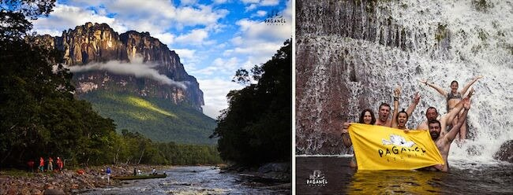

Невероятные приключения
Экспедиция в Венесуэлу. Отправься к высочайшему водопаду нашей планеты - к Анхелю. Полюбуйся как вода падая почти с километровой высоты превращается в водяную пыль не долетая до земли. Побывай на одной из знаменитых столовых гор - тепуях, которые вдохновили Конон Дойля на написание романа "Затерянный мир". Погуляй между струями мощного водопада Аче и скалой, с которой он падает. А на закуску окунись в бирюзовых водах Карибского моря!
Программа экспедиции рассчитана на 18 дней. Маршрут путешествия: г. Каракас – Пуэрто Ордас – Национальный парк Канайма – водопад Анхель – Пуэрто Ордас – Санта Елена – Национальный парк Рорайма – Санта Елена – Пуэрто Ордас – Каракас - Чорони - Каракас
День 1 Перелёт Москва - Каракас.
Прибытие в столицу Венесуэлы г. Каракас, встреча в аэропорту и переезд в национальный аэропорт. Перелёт самолётом в Пуэрто Ордас. Размещение в гостинице. Приветственный ужин от наших венесуэльских друзей.
День 2
Заброска самолётом в труднодоступную часть Венесуэлы, в Национальный парк «Канайма». Размещение в гостинице, подготовка к началу экспедиции по реке. 4-5 часовое путешествие на лодках по рекам Карао (Сarrao) и Чурун (Сhurun) к базовому лагерю у подножья водопада Анхель. Размещение в лагере, купание в реке, поход к смотровой площадке, откуда уже виден самый высокий водопад в Мире!! Вкусный ужин у костра. Ночь в гамаках в лагере.
День 3
Ранний подьём и выход затемно к подножью Анхеля, для того, чтобы встретить рассвет прямо у водопада в красивой обзорной точке. Переход через джунгли. Купание в небольших лагунах прямо у подножья Анхеля. Возвращение в лагерь. Обед. 4-х часовой переход на лодках к посёлку Канайма. Размещение в лагере. Ночь в гостинице с кроватями.
День 4
Знакомство с местной командой гидов, потеров и поваров, которые примут участие вместе с нами в восхождение на Затерянный мир Венесуэлы – Рорайму. Переезд на джипах из Санта-Елена в Паратепуй - индейская деревня, находящаяся на высоте 1200 метров. Путь занимает два часа, чтобы добраться до нее. Потом нам предстоит пяти часовой переход, чтобы достичь лагеря Кукенан, который расположен на высоте 1050м. В лагере нас ждёт горячий ужин приготовленный командой гидов.
День 5
День отдыха. Изучение прекрасного городка Санта Елена, закупка сувениров на память о восхождении на Рорайму. Вечером загрузка в комфортабельный автобус, идущий по маршруту Санта Елена – Пуэрто Ордас.